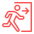

Conectado
Panel de Voluntarios
 Salir
¡Buenas noticias!
Un voluntario está en camino para ayudarte. Mantén la calma.
Ubicación de emergencia
Obteniendo ubicación...
Ver Guía de Primeros Auxilios
💬 Conversar con el voluntario
Cancelar Emergencia
Guías de Primeros Auxilios
Chat con el voluntario
Esperando mensajes...
Voluntario escribiendo...